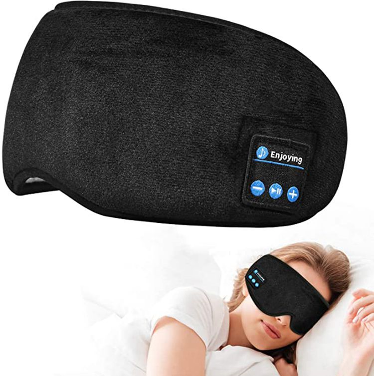
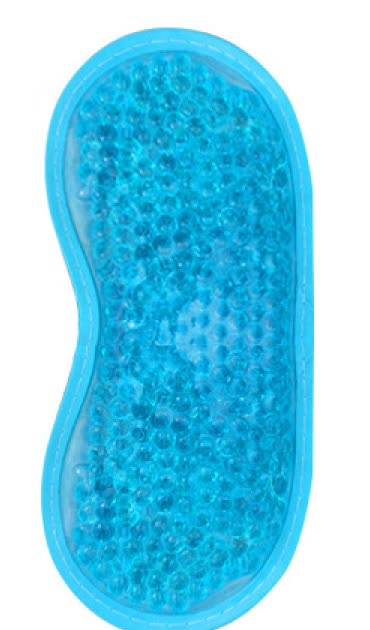

Un bon sommeil ne dépend presque jamais d'un seul objet ou d'une seule astuce — c'est une accumulation de petites habitudes. Voici 10 gestes simples, dans l'ordre où vous pouvez les tester, du soir jusqu'au coucher. Vous n'avez pas besoin de tous les appliquer d'un coup : commencez par 2 ou 3, tenez-les deux semaines, puis ajoutez les suivants.
1. Un horaire régulier, même le week-end
Se coucher et se lever à des heures proches chaque jour aide votre horloge interne à se stabiliser. Un décalage de plus de 1h à 2h le week-end peut suffire à perturber l'endormissement du dimanche soir — l'équivalent d'un petit décalage horaire chaque semaine.
2. Réduire les écrans avant le coucher
Coupez ou assombrissez les écrans 45 à 60 minutes avant de dormir. Si c'est impossible dans votre quotidien, activez au minimum un mode nuit / filtre de lumière bleue et baissez la luminosité au maximum.
3. Une chambre fraîche, sombre et calme
Une température autour de 18-19°C, des rideaux occultants (ou un masque de nuit) et le moins de bruit parasite possible favorisent un endormissement plus rapide, pour la plupart des dormeurs.
4. Un fond sonore choisi, plutôt que subi
Un bruit blanc, une pluie douce ou des vagues peuvent masquer les bruits parasites (voisins, rue, ronflements) bien mieux que le silence total ou les notifications de téléphone qui vous réveillent.

Masque Bluetooth Sommeil — 39,00 €
Pour écouter vos sons d'ambiance en noir total, sans écouteurs classiques qui compriment l'oreille.
Voir la fiche5. Limiter la caféine l'après-midi
Café, thé, sodas caféinés : leur effet peut durer plusieurs heures dans l'organisme. Essayez de ne plus en consommer après 14h-15h et observez si votre endormissement s'améliore sur une à deux semaines.
6. Un dîner léger, pas trop tard
Un repas copieux ou trop tardif, ou de l'alcool juste avant de dormir, perturbent souvent la qualité du sommeil même si l'endormissement semble parfois plus rapide sur le moment.
7. Une détente pour le corps
Quelques étirements doux, ou un moment de fraîcheur sur les yeux fatigués, envoient un signal clair à votre corps : la journée est terminée, place au repos.

Masque Gel Yeux Chaud/Froid — 27,00 €
Réutilisable, chaud (micro-ondes) ou froid (congélateur), pour la détente des yeux fatigués avant le coucher.
Voir la fiche8. Un rituel pour l'esprit
Respiration lente, lecture papier, ou noter sur un carnet ce qui vous trotte dans la tête : cela aide à « vider » l'esprit avant de fermer les yeux. Un massage facial doux (gua sha, roller) peut aussi faire partie de ce moment de transition entre la journée et la nuit.

Set Gua Sha + Roller Quartz Rose — 26,00 €
Un rituel facial apaisant de quelques minutes, en pierre naturelle, pour marquer la transition vers le repos.
Voir la fiche9. Évitez de regarder l'heure la nuit
En cas de réveil nocturne, retournez le réveil ou le téléphone. Regarder l'heure alimente souvent l'anxiété (« il ne me reste que 4h à dormir ») et retarde le rendormissement plus qu'autre chose.
10. La régularité avant la perfection
Un petit rituel simple répété chaque soir vaut largement mieux qu'un rituel parfait suivi une fois par mois. Choisissez 2 ou 3 gestes ci-dessus et tenez-les 2 semaines avant d'en ajouter d'autres.
Ce guide donne des conseils généraux d'hygiène du sommeil, à titre informatif. Il ne remplace pas un avis médical et ne constitue pas un traitement. Les produits mentionnés sont des accessoires de bien-être et de confort, pas des dispositifs médicaux : ils ne diagnostiquent, ne traitent ni ne guérissent aucune maladie ou trouble du sommeil. En cas de trouble du sommeil persistant, consultez un professionnel de santé qualifié.
Vous ne savez pas par où commencer ?
Faites le test « Quel dormeur es-tu ? » : 2 minutes pour identifier votre profil et recevoir votre routine du soir en PDF.
🌙 Faire le test